물류관리사-2교시 (2024-08-03 기출문제)
1과목: 보관하역론
1. 보관의 원칙에 관한 설명으로 옳지 않은 것은?
- 네트워크 보관의 원칙: 입출고 빈도에 따라 보관할 물품의 위치를 달리하는 원칙으로 빈도가 높은 물품은 출입구 가까운 위치에 보관한다.
- 중량특성 보관의 원칙: 물품의 중량에 따라 보관 위치를 결정하는 원칙으로 중량이 무거울수록 하층부에 보관한다.
- 위치표시 보관의 원칙: 보관된 물품의 장소와 선반 번호의 위치를 표시하여 작업효율성을 높이는 원칙으로 입출고 시 불필요한 작업이나 실수를 줄일 수 있다.
- 유사성 보관의 원칙: 유사품은 가까운 장소에 모아서 보관하는 원칙으로 관리효율 향상을 기대할 수 있다.
- 통로대면 보관의 원칙: 입출고 용이성 및 보관의 효율성을 위해 물품을 가능한 통로에 접하여 보관하는 것으로 화물의 원활한 흐름과 활성화를 위한 원칙이다.
(정답률: 알수없음)

2. 보관품목수, 보관수량, 회전율에 따른 보관유형을 올바르게 표시한 것은?
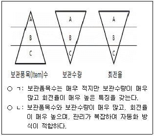
- ㄱ: A-A-A, ㄴ: C-C-A
- ㄱ: A-A-A, ㄴ: C-A-A
- ㄱ: A-C-C, ㄴ: C-C-A
- ㄱ: C-A-A, ㄴ: A-C-C
- ㄱ: C-A-A, ㄴ: A-C-A
(정답률: 알수없음)
3. 복합물류터미널에 관한 설명으로 옳지 않은 것은?
- 두 종류 이상의 운송수단을 연계할 수 있는 규모 및 시설을 갖춘 화물터미널이다.
- 보관기능 위주로 운영되는 물류시설로 환적물량은 취급하지 않는다.
- 조립ㆍ가공 등의 기능을 수행하기 위한 유통가공 시설을 보유할 수 있다.
- 배송센터 기능과 더불어 화물정보센터의 기능도 수행한다.
- 화물의 집화ㆍ하역 및 이와 관련된 분류ㆍ포장 등에 필요한 기능을 갖춘 물류시설이다.
(정답률: 알수없음)
4. 물류시설의 설명으로 옳은 것은?
- 스마트물류센터: 첨단물류설비, 운영시스템 등을 도입하여 저비용, 고효율, 친환경성 등에서 우수한 성능을 발휘할 수 있는 물류창고
- 농수산물종합유통센터: 농수산물의 출하경로를 다원화하고 물류비용을 절감하기 위한 물류시설로 농수산물의 수집, 포장, 가공, 보관, 수송, 판매기능과 함께 통관기능도 수행
- ICD(Inland Container Depot): 장치보관, 집화분류, 통관 기능과 함께 마샬링(marshalling), 본선 선적 및 양하 기능도 수행
- CY(Container Yard): 컨테이너에 LCL(Less than Container Load)화물을 넣고 꺼내는 작업을 하는 시설과 장소
- 도시첨단물류단지: 수출입 통관업무, 집하, 분류 기능을 수행하며, 트럭회사, 포워더(forwarder) 등을 유치하여 운영하므로 내륙 항만이라고도 부름
(정답률: 알수없음)
5. 물류센터 운영에 관한 설명으로 옳지 않은 것은?
- 상품의 리드타임 단축을 통해 고객 만족도를 높일 수 있다.
- 각각의 공장에서 소비지까지 제품을 개별 수송하므로 손상, 분실, 오배송이 감소한다.
- 적절한 재고량을 유지하면서 고객니즈에 부합하는 서비스를 제공한다.
- 물류센터 수가 증가하면 총 안전재고량과 납기준수율이 모두 증가한다.
- 물류센터 운영 전에 비해 상대적으로 공차율이 감소한다.
(정답률: 알수없음)
6. 컨테이너 터미널의 시설에 관한 설명으로 옳지 않은 것은?
- 마샬링 야드(marshalling yard)는 컨테이너선에 선적하거나 양하하기 위해 컨테이너를 임시 보관하는 공간으로 대부분 에이프런에 인접해 있다.
- 게이트(gate)는 컨테이너 터미널의 화물 출입통로이다.
- 메인트넌스 숍(maintenance shop)은 컨테이너 자체의 검사, 보수, 사용 전후의 청소 등을 수행한다.
- ILS(Instrument Landing System)은 선박이 안전하게 접안할 수 있도록 유도하는 시설로 평소에는 항만 하역장비를 보관하기도 한다.
- 위생검사소는 부패성 화물, 음식물과 같이 위생에 위험이 초래될 가능성이 있는 화물에 대한 검사를 위해 설치한다.
(정답률: 알수없음)
7. 물류거점 입지선정 방법에 관한 설명으로 옳지 않은 것은?
- 요인평정법(가중점수법)은 접근성, 지역환경, 노동력 등의 입지요인별로 가중치를 부여하고 가중치를 고려한 요인별 평가점수를 통해 입지후보지를 선택하는 방법이다.
- 브라운 & 깁슨법은 입지에 영향을 주는 요인을 필수적 요인, 객관적 요인, 주관적 요인으로 구분하여 평가하는 방법이다.
- 총비용 비교법은 입지거점 대안별로 예상비용을 산출하고, 총비용이 최소가 되는 대안을 선택하는 방법이다.
- 손익분기 도표법은 예상 물동량에 대한 고정비와 변동비를 산출하고 그 합을 비교하여 물동량에 따른 총비용이 최소가 되는 대안을 선택하는 방법이다.
- 톤-킬로법은 물동량의 무게와 거리를 고려한 방법으로 입지 제약, 환경 제약 등의 주관적 요인을 반영할 수 있는 방법이다.
(정답률: 알수없음)
8. 물류센터 규모 및 내부 설계 시 고려해야 할 사항으로 옳지 않은 것은?
- 입출고, 피킹, 보관, 배송 등에 관한 운영 특성을 고려한다.
- 자동화 수준, 설비 종류 등 설비 특성을 고려한다.
- 화물보험 가입 용이성, 신용장 개설 편의성 등 보험ㆍ금융 회사 접근 특성을 고려한다.
- 주문건수, 주문빈도, 주문크기 등의 주문 특성을 고려한다.
- 화물의 크기, 무게, 가격 등 화물 특성을 고려한다.
(정답률: 알수없음)
9. 다음은 각 수요지의 수요량과 위치좌표를 나타낸 것이다. 무게중심법에 의한 신규 배송센터의 최적의 입지좌표는? (단, 배송센터로의 공급은 고려하지 않음)
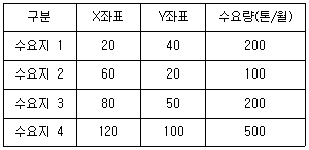
- X: 52, Y: 40
- X: 72, Y: 52
- X: 80, Y: 72
- X: 86, Y: 70
- X: 92, Y: 86
(정답률: 알수없음)
10. 자동창고시스템(AS/RS)에서 단위화물을 처리하는 S/R(Storage/Retrieval)장비의 단일명령(single command) 수행시간(cycle time)은 3분, 이중명령(dual command) 수행시간은 5분이다. 이 AS/RS 에서 1시간 동안 처리해야 할 저장(storage)과 반출(retrieval) 지시가 각각 10건씩 발생하며, 그 중에서 이중명령으로 60%가 우선 수행되고 나머지는 단일명령으로 수행된다고 할 때, S/R 장비의 평균가동률은?
- 84 %
- 86 %
- 88 %
- 90 %
- 92 %
(정답률: 알수없음)
11. 창고의 저장위치 할당 방법에 관한 설명으로 옳지 않은 것은?
- 임의저장(randomized storage)방식은 저장위치를 임의로 결정한다.
- 지정위치저장(dedicated storage)방식은 품목별 입출고 빈도수를 고려하여 저장위치를 지정한다.
- 지정위치저장(dedicated storage)방식의 저장공간이 임의저장 방식의 저장 공간보다 크거나 같다.
- 등급별저장(class-based storage)방식은 보관품목의 단위당 경제적 가치를 기준으로 등급을 설정한다.
- 등급별저장(class-based storage)방식에서 동일 등급 내에서의 저장위치는 임의저장방식으로 결정된다.
(정답률: 알수없음)
12. 적층랙(mezzanine rack)에 관한 설명으로 옳은 것은?
- 천장이 높은 단층창고 등에서 창고의 화물적재 높이와 천장 사이 공간을 활용하는데 효과적이다.
- 직선으로 수평 이동하는 랙이며, 도서관 등에서 통로면적을 절약하는데 효과적이다.
- 선입선출의 목적으로 격납 부분에 롤러, 휠 등을 장착하여 반입과 반출이 반대방향에서 이루어진다.
- 랙 자체가 수평 또는 수직방향으로 회전하여 저장 위치가 지정된 입출고장소로 이동 가능한 랙이며, 가벼운 다품종 소량품에 많이 적용된다.
- 파이프, 목재 등의 장척물 보관에 적합하도록 랙 구조물에 암(arm)이 설치되어 있다.
(정답률: 알수없음)
13. 기존 물류센터에서 크로스도킹(cross docking)을 도입할 때, 이에 관한 설명으로 옳지 않은 것은?
- 기계설비 보강과 정보기술도입 등 추가 투자가 필요할 수 있다.
- 물류센터의 재고 회전율이 감소한다.
- 물류센터의 재고수준이 감소한다.
- 장기적으로 물류센터의 물리적 저장 공간을 줄일 수 있다.
- 입고되는 품목의 출하지가 알려져 있는 경우에 더 효과적이다.
(정답률: 알수없음)
14. 창고에 관한 설명으로 옳지 않은 것은?
- 야적창고: 물품을 노지에 보관하는 창고
- 수면창고: 하천이나 해수면을 이용하여 물품을 보관하는 창고
- 리스창고: 자기의 화물을 보관하기 위해 설치한 창고
- 위험물창고: 고압가스 및 유독성 물질 등을 보관하는 창고
- 영업창고: 타인의 화물을 보관하는 창고
(정답률: 알수없음)
15. 창고의 기능으로 옳은 것은 모두 몇 개 인가?
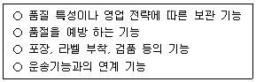
- 0개
- 1개
- 2개
- 3개
- 4개
(정답률: 알수없음)
16. 창고관리시스템(WMS: Warehouse Management System)에 관한 설명으로 옳지 않은 것은?
- 화물파손에 대한 위험성이 높아진다.
- 운송수단과의 연계가 쉬워진다.
- 피킹, 출하의 효율성이 높아진다.
- 입하, 검품 등이 용이해진다.
- 창고 내의 화물 로케이션관리가 용이해진다.
(정답률: 알수없음)
17. 오더 피킹에 관한 설명으로 옳지 않은 것은?
- 1인 1건 피킹: 피커(picker)가 1건의 주문 전표에서 요구되는 물품을 모두 피킹하는 방법
- 총량 오더 피킹: 1건의 주문마다 물품을 피킹해서 모으는 방법
- 일괄 오더 피킹: 여러 건의 주문 전표를 한데 모아 한꺼번에 피킹하는 방법
- 존(zone) 피킹: 자기가 분담하는 선반의 작업범위를 정해 두고, 주문 전표에서 자기가 맡은 종류의 물품만을 피킹하는 방법
- 릴레이(relay) 피킹: 주문 전표에서 해당 피커가 담당하는 품목만을 피킹하고, 다음 피커에게 넘겨주는 방법
(정답률: 알수없음)
18. 시계열 분석법에 관한 설명으로 옳지 않은 것은?
- 시계열 분석법에는 이동평균법, 가중이동평균법, 지수평활법 등이 있다.
- 수준(level)은 추세, 계절적, 순환적, 무작위적 요인을 제외한 평균적 수요량을 의미한다.
- 추세(trend)는 수요가 계속적으로 증가하거나 감소하는 경향을 말한다.
- 계절적(seasonal) 요인은 수요의 변화가 규칙적으로 반복하는 현상을 말한다.
- 순환적(cyclical) 요인은 단기간에 발생하는 불규칙한 수요변화이다.
(정답률: 알수없음)
19. MRP(Material Requirements Planning)에 관한 설명으로 옳지 않은 것은?
- MRP는 주생산계획을 기초로 완제품 생산에 필요한 자재 및 구성부품의 종류, 수량, 시기 등을 계획한다.
- MRP 시스템은 주생산계획, 자재명세서와 재고기록파일을 이용한다.
- MRP는 재고수준의 최대화를 목표로 한다.
- MRP는 소요자재를 언제 발주할 것인지를 알려준다.
- MRP를 확장하여 사업계획과 각 부문별 계획을 연결시키는 계획을 제조자원계획(manufacturing resource planning)이라고 부른다.
(정답률: 알수없음)
20. 6월의 판매 예측량은 110,000개이고, 실제 판매량은 100,000개이다. 지수평활법을 이용한 7월의 판매 예측량(개)은? (단, 평활상수(α) 는 0.2를 사용한다.)
- 1⑤,000
- 106,000
- 107,000
- 108,000
- 109,000
(정답률: 알수없음)
21. 집중구매방식과 분산구매방식의 비교 설명으로 옳지 않은 것은?
- 집중구매방식은 대량구매가 가능하며, 가격과 거래조건이 유리하다.
- 집중구매방식은 구입 절차를 표준화하기 쉽다.
- 집중구매방식은 공통자재의 표준화, 단순화가 가능하다.
- 분산구매방식은 구매요청 사업장의 특수한 요구가 반영되기 쉽다.
- 분산구매방식은 긴급수요에 대처하기 불리하다.
(정답률: 알수없음)
22. A제품의 재고관리 환경이 EPQ(Economic Production Quantity) 가정과 일치하며, A의 연간 수요량이 2700톤, 하루 생산량이 12톤, 일일 소비량이 9톤이다. A제품의 생산가동 준비비용(setup cost)은 1회당 400,000원이고, 톤당 연간 재고유지비용이 13,500원이라고 할 때, 경제적생산량(EPQ)은?
- 400톤
- 500톤
- 600톤
- 700톤
- 800톤
(정답률: 알수없음)
23. 재고관리의 목표가 아닌 것은?
- 서비스율 증대
- 백오더(back order)율 증대
- 재고회전율 증대
- 재고품의 손상율 감소
- 보관비용 감소
(정답률: 알수없음)
24. 재고관리시스템에 관한 설명으로 옳지 않은 것은?
- 정량발주시스템: 연속적으로 재고수준을 검토하므로 연속점검시스템(continuous review system)이라고도 한다.
- 정량발주시스템: 주문량이 일정하므로 Q시스템이라고도 한다.
- 정기발주시스템: 재고수준 파악과 발주를 정기적으로 하고, 재고가 목표수준에 도달하도록 발주량을 정한다.
- 정기발주시스템: 통상 정량발주시스템에 비하여 적은 안전재고량을 갖는다.
- 기준재고시스템: 일명 s - S재고시스템이라고 하며 보유재고량이 s보다 적어지면 최대재고량인 S에 도달하도록 발주량을 정한다.
(정답률: 알수없음)
25. 경제적주문량(EOQ) 모형의 전제조건(가정)이 아닌 것은?
- 주문비용과 단가는 주문량에 관계없이 일정하다.
- 재고유지비용은 주문량에 반비례한다.
- 단일 품목이며, 주문량은 한번에 입고된다.
- 리드타임(lead time)은 일정하다.
- 재고부족은 허용되지 않는다.
(정답률: 알수없음)
26. 하역에 관한 설명으로 옳은 것은?
- 물류센터 내에서 물품의 짧은 거리 이동은 하역의 범위에 포함되지 않는다.
- 하역은 운송 수단에 실려 있는 물품을 꺼내는 일만을 의미하며, 정돈이나 분류는 하역의 범위에 포함되지 않는다.
- 배송 속도가 중요한 전자상거래 시대에 하역의 중요성이 더욱 부각되고 있다.
- 하역작업의 생산성을 향상시키기 위해 인력 하역 비중이 늘어나는 추세이다.
- 하역작업의 혁신을 위해 물류센터 장비의 기계화와 무인화를 늦게 도입해야 한다.
(정답률: 알수없음)
27. ＜보기＞의 화물 상태 별 운반활성지수를 모두 합한 것은?
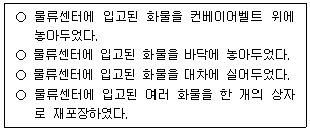
- 4
- 5
- 6
- 7
- 8
(정답률: 알수없음)
28. 하역의 원칙이 아닌 것은?
- 경제성 원칙
- 이동거리 최소화 원칙
- 동일성 원칙
- 단위화 원칙
- 운반 활성화 원칙
(정답률: 알수없음)
29. 하역의 구성 요소를 모두 고른 것은?
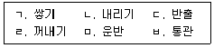
- ㄱ, ㄴ, ㄷ
- ㄴ, ㄷ, ㅂ
- ㄱ, ㄹ, ㅁ, ㅂ
- ㄷ, ㄹ, ㅁ, ㅂ
- ㄱ, ㄴ, ㄷ, ㄹ, ㅁ
(정답률: 알수없음)
30. 하역에 활용되는 장비에 관한 설명으로 옳지 않은 것은?
- AGV(Automated Guided Vehicle)는 화물의 이동을 위해 지정된 장소까지 자동주행할 수 있는 장비이다.
- 사이드 포크형 지게차는 차체의 측면에 포크와 마스트가 장착된 지게차이다.
- 카운터 밸런스형 지게차는 포크와 마스트를 전방에 장착하고 후방에 웨이트를 설치한 지게차이다.
- 트롤리 컨베이어는 로울러 또는 휠을 배열하여 화물을 운반하는 컨베이어이다.
- 벨트 컨베이어는 연속적으로 움직이는 벨트를 사용하여 화물을 운반하는 컨베이어이다.
(정답률: 알수없음)
31. 다음 설명에 모두 해당하는 장비는?
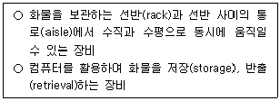
- 스태커 크레인(stacker crane)
- 데릭(derrick)
- 도크 레벨러(dock leveller)
- 리프트 게이트(lift gate)
- 야드 갠트리 크레인(yard gantry crane)
(정답률: 알수없음)
32. 파렛트에 관한 설명으로 옳지 않은 것은?
- 롤(roll) 파렛트는 바닥면에 바퀴가 장착되어 밀어서 움직일 수 있다.
- 항공 파렛트는 화물을 탑재 후 항공기의 화물적재공간을 고려하여 망(net)이나 띠(strap)로 묶을 수 있다.
- 파렛트는 운송, 보관, 하역 등의 효율을 증대시키는데 적합하다.
- 시트(sheet) 파렛트는 푸시풀(push-pull) 장치를 부착한 장비에 의해 하역되는 시트 모양의 파렛트이다.
- 사일로(silo) 파렛트는 액체를 담는 용도로 사용되며 밀폐를 위한 뚜껑이 있다.
(정답률: 알수없음)
33. 유닛로드시스템(ULS)에 관한 설명으로 옳지 않은 것은?
- 유닛로드시스템으로 운송의 편의성이 떨어졌고, 트럭 회전율 또한 감소하였다.
- 유닛로드시스템으로 하역의 기계화가 촉진되고 보관효율이 향상되었다.
- 유닛로드시스템으로 재고파악이 용이해졌다.
- 유닛로드시스템이란 컨테이너나 파렛트 1개분으로 화물을 단위화하여 이 단위를 유지하는 것을 말한다.
- 빈 파렛트나 빈 컨테이너 회수가 원활하지 못하면 운송 및 하역 작업이 지연될 수 있다.
(정답률: 알수없음)
34. 물류모듈화를 위해 파렛트화 된 화물과 정합성을 고려할 필요가 없는 것은?
- 랙(rack)
- 해상용 갠트리 크레인(gantry crane)
- 파렛트 트럭
- 컨테이너(container)
- 운반승강기
(정답률: 알수없음)
35. 다음 설명에 모두 해당하는 파렛트 풀(pool) 시스템은?
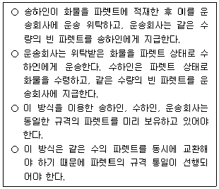
- 교환방식
- 리스ㆍ렌탈방식
- 교환ㆍ리스병용방식
- 대차결제방식
- 교환ㆍ대차결제병용방식
(정답률: 알수없음)
36. 분류(sorting)방식 중 동작에 의한 분류 방식이 아닌 것은?
- 밀어내는 방식
- 다이버트 방식
- 바코드 방식
- 이송 방식
- 틸트 방식
(정답률: 알수없음)
37. 일관 파렛트화의 장점으로 옳지 않은 것은?
- 운반활성지수 감소
- 화물 도난과 파손의 감소
- 물품검수 용이
- 하역작업 능률 향상
- 하역시간의 단축
(정답률: 알수없음)
38. 아래 설명에 해당하는 것은?
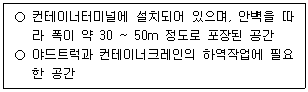
- 잔교(pier)
- CFS(Container Freight Station)
- 에이프런(apron)
- 컨테이너 야드(container yard)
- 컨트롤센터(control center)
(정답률: 알수없음)
39. 항공하역 장비에 해당하는 것을 모두 고른 것은?
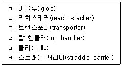
- ㄱ, ㄴ, ㄷ
- ㄱ, ㄴ, ㄹ
- ㄱ, ㄷ, ㄹ
- ㄱ, ㄷ, ㅁ
- ㄱ, ㄷ, ㅂ
(정답률: 알수없음)
40. 다음 중 포장의 기능이 아닌 것은?
- 판매촉진성
- 표시성
- 상품 수요 예측의 정확성
- 취급의 편리성
- 보호성
(정답률: 알수없음)
2과목: 물류관련법규
41. 물류정책기본법령상 물류정책위원회에 관한 설명으로 옳지 않은 것은?
- 물류보안에 관한 중요 정책 사항은 국가물류정책위원회의 심의ㆍ조정 사항에 포함된다.
- 국가물류정책위원회의 분과위원회가 국가물류정책위원회에서 위임한 사항을 심의ㆍ조정한 때에는 분과위원회의 심의ㆍ조정을 국가물류정책위원회의 심의ㆍ조정으로 본다.
- 국가물류정책위원회에 둘 수 있는 전문위원회는 녹색물류전문위원회와 생활물류전문위원회이다.
- 지역물류정책에 관한 주요 사항을 심의하기 위하여 국토교통부장관 소속으로 지역물류정책위원회를 둘 수 있다.
- 지역물류정책위원회는 위원장을 포함한 20명 이내의 위원으로 구성한다.
(정답률: 알수없음)
42. 물류정책기본법상 물류체계의 효율화에 관한 설명으로 옳지 않은 것은?
- 국토교통부장관ㆍ해양수산부장관 또는 산업통상자원부장관은 효율적인 물류활동을 위하여 필요한 물류시설 및 장비를 확충할 것을 물류기업에 권고할 수 있다.
- 국토교통부장관ㆍ해양수산부장관ㆍ산업통상자원부장관 또는 시ㆍ도지사는 물류공동화를 추진하는 물류기업이나 화주기업 또는 물류 관련 단체에 대하여 예산의 범위에서 필요한 자금을 지원할 수 있다.
- 국토교통부장관ㆍ해양수산부장관 또는 산업통상자원부장관은 물류기업이 물류자동화를 위하여 물류시설 및 장비를 확충하거나 교체하려는 경우에는 필요한 자금을 지원할 수 있다.
- 국토교통부장관 또는 해양수산부장관은 물류표준화에 관한 업무를 효과적으로 추진하기 위하여 필요하다고 인정하는 경우에는 통계청장에게 ｢산업표준화법｣에 따른 한국산업표준의 제정ㆍ개정 또는 폐지를 요청하여야 한다.
- 국토교통부장관ㆍ해양수산부장관ㆍ산업통상자원부장관 또는 관세청장은 물류정보화를 통한 물류체계의 효율화를 위하여 필요한 시책을 강구하여야 한다.
(정답률: 알수없음)
43. 물류정책기본법령상 우수물류기업의 인증에 관한 설명으로 옳지 않은 것은?
- 국토교통부장관 및 해양수산부장관은 물류기업의 육성과 물류산업 발전을 위하여 소관 물류기업을 각각 우수물류기업으로 인증할 수 있다.
- 우수물류기업의 인증은 물류사업별로 운영할 수 있다.
- 국토교통부장관 또는 해양수산부장관은 인증우수물류기업이 해당 요건을 유지하는지에 대하여 국토교통부와 해양수산부의 공동부령으로 정하는 바에 따라 2년마다 점검하여야 한다.
- 국토교통부장관 또는 해양수산부장관은 소관 인증우수물류기업이 물류사업으로 인하여 공정거래위원회로부터 시정조치를 받은 경우에는 그 인증을 취소할 수 있다.
- 국토교통부장관 및 해양수산부장관은 우수물류기업의 인증과 관련하여 우수물류기업 인증심사 대행기관을 공동으로 지정하여 인증신청의 접수를 하게 할 수 있다.
(정답률: 알수없음)
44. 물류정책기본법상 국제물류주선업의 등록에 관한 설명이다. ( )에 들어갈 내용을 바르게 나열한 것은?
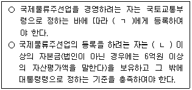
- ㄱ: 시ㆍ도지사, ㄴ: 3억원
- ㄱ: 시ㆍ도지사, ㄴ: 4억원
- ㄱ: 국토교통부장관, ㄴ: 3억원
- ㄱ: 국토교통부장관, ㄴ: 4억원
- ㄱ: 국토교통부장관, ㄴ: 5억원
(정답률: 알수없음)
45. 물류정책기본법령상 물류관련협회 및 민ㆍ관 합동 물류지원센터에 관한 설명으로 옳지 않은 것은?
- 국토교통부장관 또는 해양수산부장관은 물류관련협회 설립의 인가권자이다.
- 물류관련협회는 법인으로 한다.
- 물류관련협회는 해당 사업의 진흥ㆍ발전에 필요한 통계의 작성ㆍ관리와 외국자료의 수집ㆍ조사ㆍ연구사업을 수행한다.
- 국토교통부장관ㆍ해양수산부장관ㆍ산업통상자원부장관 및 대통령령으로 정하는 물류관련협회 및 물류관련 전문기관ㆍ단체는 공동으로 물류지원센터를 설치ㆍ운영할 수 있다.
- 민ㆍ관 합동 물류지원센터의 장은 3년마다 사업계획을 수립한다.
(정답률: 알수없음)
46. 물류정책기본법령상 국가물류통합정보센터에 관한 설명으로 옳지 않은 것은?
- 국토교통부장관은 국가물류통합정보센터를 설치ㆍ운영할 수 있다.
- 국토교통부장관은 자본금 2억원 이상, 업무능력 등 대통령령으로 정하는 기준과 자격을 갖춘 ｢상법｣상의 주식회사를 국가물류통합정보센터의 운영자로 지정할 수 있다.
- 국토교통부장관은 국가물류통합정보센터운영자를 지정하려는 경우에는 미리 물류정책분과위원회의 심의를 거쳐 신청방법 등을 정하여 30일 이상 관보 또는 인터넷 홈페이지에 이를 공고하여야 한다.
- 국토교통부장관은 국가물류통합정보센터운영자가 국가물류통합데이터베이스의 물류정보를 영리를 목적으로 사용한 경우에는 그 지정을 취소할 수 있다.
- 국토교통부장관은 해양수산부장관ㆍ산업통상자원부장관 및 관세청장과 협의하여 국가물류통합정보센터운영자에게 필요한 지원을 할 수 있다.
(정답률: 알수없음)
47. 물류정책기본법상 환경친화적 물류의 촉진에 관한 설명으로 옳지 않은 것은?
- 국토교통부장관ㆍ해양수산부장관 또는 시ㆍ도지사는 물류활동이 환경친화적으로 추진될 수 있도록 관련 시책을 마련하여야 한다.
- 국토교통부장관ㆍ해양수산부장관 또는 시ㆍ도지사는 물류기업 및 화주기업에 대하여 환경친화적인 운송수단으로의 전환을 권고하고 지원할 수 있다.
- 국토교통부장관은 환경친화적 물류활동을 모범적으로 하는 물류기업과 화주기업을 우수기업으로 지정할 수 있다.
- 국토교통부장관은 우수녹색물류실천기업 지정심사대행기관이 고의 또는 중대한 과실로 지정 기준 및 절차를 위반한 경우에는 그 지정을 취소하여야 한다.
- 우수녹색물류실천기업 지정심사대행기관은 공공기관 또는 정부출연연구기관 중에서 지정한다.
(정답률: 알수없음)
48. 물류정책기본법령상 국가물류통합정보센터운영자 또는 단위물류정보망 전담기관이 보관하는 전자문서 및 정보처리장치의 파일에 기록되어 있는 물류정보의 보관기간은?
- 1년
- 2년
- 3년
- 4년
- 5년
(정답률: 알수없음)
49. 물류시설의 개발 및 운영에 관한 법률상 복합물류터미널사업의 등록을 할 수 없는 결격사유에 해당하는 것은?
- ｢물류시설의 개발 및 운영에 관한 법률｣을 위반하여 벌금형을 선고받은 후 3년이 된 자
- ｢물류시설의 개발 및 운영에 관한 법률｣을 위반하여 금고형을 선고받은 후 1년이 된 자
- ｢물류시설의 개발 및 운영에 관한 법률｣을 위반하여 징역형을 선고받은 후 2년6개월이 된 자
- 법인으로서 그 임원이 아닌 직원 중에 파산선고를 받고 복권되지 아니한 자가 있는 경우
- 법인으로서 그 임원 중에 ｢물류시설의 개발 및 운영에 관한 법률｣을 위반하여 금고형의 집행유예를 선고받고 그 유예기간 종료 후 1년이 된 자가 있는 경우
(정답률: 알수없음)
50. 물류시설의 개발 및 운영에 관한 법률상 물류시설개발종합계획의 수립에 관한 설명으로 옳지 않은 것은?
- 국토교통부장관은 물류시설개발종합계획을 5년 단위로 수립하여야 한다.
- 연계물류시설은 물류터미널 및 물류단지 등 둘 이상의 단위물류시설 등이 함께 설치된 물류시설이다.
- 물류시설의 기능개선 및 효율화에 관한 사항은 물류시설개발종합계획에 포함되어야 한다.
- 물류시설개발종합계획의 수립은 ｢물류정책기본법｣에 따른 물류시설분과위원회의 심의를 거쳐야 한다.
- 국토교통부장관은 물류시설개발종합계획을 수립한 때에는 이를 관보에 고시하여야 한다.
(정답률: 알수없음)
51. 물류시설의 개발 및 운영에 관한 법률상 다음 신청을 하려고 할 때 국토교통부령으로 정하는 바에 따라 수수료를 내야 하는 사항이 아닌 것은?
- 도시첨단물류단지의 지정의 신청
- 물류터미널의 구조 및 설비 등에 관한 공사시행인가의 신청
- 물류창고업의 등록
- 스마트물류센터 인증의 신청
- 복합물류터미널사업의 등록신청
(정답률: 알수없음)
52. 물류시설의 개발 및 운영에 관한 법률상 형사벌의 대상이 되는 경우를 모두 고른 것은?
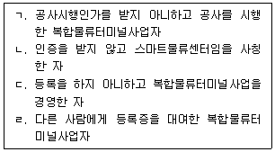
- ㄱ, ㄴ
- ㄴ, ㄷ
- ㄷ, ㄹ
- ㄱ, ㄴ, ㄹ
- ㄱ, ㄴ, ㄷ, ㄹ
(정답률: 알수없음)
53. 물류시설의 개발 및 운영에 관한 법령상 이행강제금에 관한 설명으로 옳지 않은 것은?
- 이행강제금은 해당 토지ㆍ시설 등 재산가액(｢감정평가 및 감정평가사에 관한 법률｣에 따른 감정평가법인등의 감정평가액을 말함)의 100분의 20에 해당하는 금액으로 한다.
- 물류단지지정권자는 이행강제금을 부과하기 전에 이행강제금을 부과하고 징수한다는 뜻을 미리 문서로 알려야 한다.
- 물류단지지정권자는 의무가 있는 자가 그 의무를 이행한 경우에는 이미 부과된 이행강제금 처분을 취소하여야 한다.
- 물류단지지정권자는 이행기간이 만료한 다음 날을 기준으로 하여 매년 1회 그 의무가 이행될 때까지 반복하여 이행강제금을 부과하고 징수할 수 있다.
- 물류단지지정권자는 의무를 이행하지 아니한 자에 대하여 의무이행기간이 끝난 날부터 6개월이 경과한 날까지 그 의무를 이행할 것을 명하여야 한다.
(정답률: 알수없음)
54. 물류시설의 개발 및 운영에 관한 법령상 스마트물류센터의 인증에 관한 설명으로 옳은 것은?
- 스마트물류센터 인증은 국토교통부장관과 해양수산부장관이 공동으로 한다.
- 스마트물류센터 인증의 유효기간은 인증을 받은 날부터 5년으로 한다.
- 인증받은 자가 인증서를 반납하는 경우는 인증을 취소할 수 있는 사유에 해당한다.
- 스마트물류센터 인증에 대한 정기 점검은 인증한 날을 기준으로 5년마다 한다.
- 인증기관의 장은 점검 결과 스마트물류센터가 인증기준을 유지하고 있다고 판단하는 경우에는 인증의 유효기간을 5년의 범위 내에서 연장할 수 있다.
(정답률: 알수없음)
55. 물류시설의 개발 및 운영에 관한 법률상 물류단지의 개발 및 운영에 관한 설명으로 옳은 것은?
- 일반물류단지는 물류단지 개발사업의 대상지역이 2개 이상의 시ㆍ도에 걸쳐 있는 경우 시ㆍ도지사가 협의하여 지정한다.
- 시ㆍ도지사는 일반물류단지를 지정하려는 때에는 ｢물류정책기본법｣에 따른 물류시설분과위원회의 심의를 거쳐야 한다.
- 국토교통부장관은 시장ㆍ군수ㆍ구청장의 신청을 받아 도시첨단물류단지를 지정한다.
- ｢민법｣에 따라 설립된 법인은 물류단지개발사업의 시행자로 지정받을 수 없다.
- 물류단지 안에서 토지분할을 하려는 자는 시장ㆍ군수ㆍ구청장의 허가를 받아야 한다.
(정답률: 알수없음)
56. 물류시설의 개발 및 운영에 관한 법령상 물류단지 관리기구에 해당하지 않는 것은?
- 지방자치단체
- ｢한국토지주택공사법｣에 따른 한국토지주택공사
- ｢한국도로공사법｣에 따른 한국도로공사
- ｢한국농어촌공사 및 농지관리기금법｣에 따른 한국농어촌공사
- ｢지방공기업법｣에 따른 지방공사
(정답률: 알수없음)
57. 화물자동차 운수사업법상 운수사업자 등이 국가로부터 재정지원을 받을 수 있는 사업에 해당하지 않는 것은?
- 공동차고지 및 공영차고지 건설
- 화물자동차 운수사업의 정보화
- 낡은 차량의 대체
- 화물자동차 휴게소의 건설
- 화물자동차 운수사업에 대한 홍보
(정답률: 알수없음)
58. 화물자동차 운수사업법령상 화물자동차 운송주선사업에 관한 설명으로 옳지 않은 것은?
- 국토교통부장관은 화물자동차 운송주선사업의 허가사항 변경신고를 받은 경우 그 신고를 받은 날부터 7일 이내에 신고수리 여부를 신고인에게 통지하여야 한다.
- 운송주선사업자는 자기 명의로 다른 사람에게 화물자동차 운송주선사업을 경영하게 할 수 없다.
- 관할관청은 화물자동차 운송주선사업 허가증을 발급하였을 때에는 그 사실을 협회에 통지하고 화물자동차 운송주선사업 허가대장에 기록하여 관리하여야 한다.
- 화물자동차 운송주선사업 허가대장은 전자적 처리가 불가능한 특별한 사유가 없으면 전자적 처리가 가능한 방법으로 작성하여 관리하여야 한다.
- 관할관청은 운송주선사업자가 허가기준을 충족하지 못한 사실을 적발하였을 때에는 특별한 사유가 없으면 적발한 날부터 30일 이내에 처분을 하여야 한다.
(정답률: 알수없음)
59. 화물자동차 운수사업법령상 공제조합에 관한 설명으로 옳지 않은 것은?
- 공제조합을 설립하려면 공제조합의 조합원 자격이 있는 자의 10분의 1 이상이 발기하고, 조합원 자격이 있는 자 200인 이상의 동의를 받아 창립총회에서 정관을 작성한 후 국토교통부장관에게 인가를 신청하여야 한다.
- 공제조합은 공제사업에 관한 사항을 심의ㆍ의결하고 그 업무집행을 감독하기 위하여 운영위원회를 둔다.
- 국토교통부장관은 운송사업자로 구성된 협회 등이 각각 연합회를 설립하는 경우, 연합회(연합회가 설립되지 아니한 경우에는 그 업종을 말함)별로 하나의 공제조합만을 인가하여야 한다.
- 연합회가 공제사업을 하는 경우의 운영위원회 위원은 시ㆍ도별 협회의 대표 전원을 포함하여 25명 이내로 한다.
- 공제조합은 결산기마다 그 사업의 종류에 따라 공제금에 충당하기 위한 책임준비금 및 지급준비금을 계상하고 이를 적립하여야 한다.
(정답률: 알수없음)
60. 화물자동차 운수사업법령상 화물자동차 운송가맹사업 등에 관한 설명으로 옳지 않은 것은?
- 운송사업자가 국토교통부령으로 정하는 바에 따라 운송가맹사업자의 화물정보망을 이용하여 운송을 위탁하면 직접 운송한 것으로 본다.
- 국토교통부장관은 운송가맹사업자가 거짓이나 그 밖의 부정한 방법으로 화물자동차 운송가맹사업 허가를 받은 경우 6개월 이내의 기간을 정하여 그 사업의 전부 또는 일부의 정지를 명할 수 있다.
- 화물취급소의 설치 및 폐지는 운송가맹사업자의 허가사항 변경신고의 대상이다.
- 운송사업자가 다른 운송사업자나 다른 운송사업자에게 소속된 위ㆍ수탁차주에게 화물운송을 위탁하는 경우에는 운송가맹사업자의 화물정보망을 이용할 수 있다.
- 감차 조치, 사업 전부정지 또는 사업 일부정지의 대상이 되는 화물자동차가 2대 이상인 경우에는 화물운송에 미치는 영향을 고려하여 해당 처분을 분할하여 집행할 수 있다.
(정답률: 알수없음)
61. 화물자동차 운수사업법상 적재물배상보험등의 의무 가입에 관한 설명이다. ( )에 들어갈 내용을 바르게 나열한 것은?
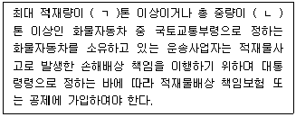
- ㄱ: 2.5, ㄴ: 2.5
- ㄱ: 2.5, ㄴ: 5
- ㄱ: 2.5, ㄴ: 7
- ㄱ: 3, ㄴ: 5
- ㄱ: 5, ㄴ: 10
(정답률: 알수없음)
62. 화물자동차 운수사업법상 위ㆍ수탁계약의 갱신에 관한 설명이다. ( )에 들어갈 내용을 바르게 나열한 것은?
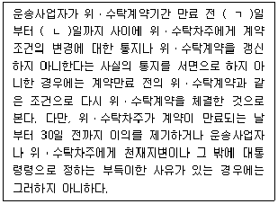
- ㄱ: 150, ㄴ: 20
- ㄱ: 150, ㄴ: 30
- ㄱ: 150, ㄴ: 60
- ㄱ: 180, ㄴ: 60
- ㄱ: 180, ㄴ: 90
(정답률: 알수없음)
63. 화물자동차 운수사업법령상 운수종사자 교육에 관한 설명으로 옳지 않은 것은?
- 관할관청은 운수종사자 교육을 실시하는 때에는 운수종사자 교육계획을 수립하여 운수사업자에게 교육을 시작하기 1개월 전까지 통지하여야 한다.
- 운전적성정밀검사 중 특별검사 대상자인 운수종사자 교육의 교육시간은 8시간으로 한다.
- ｢물류정책기본법｣에 따라 이동통신단말장치를 장착해야 하는 위험물질 운송차량을 운전하는 사람에 대한 교육시간은 8시간으로 한다.
- 운수종사자 교육을 실시할 때에 교육방법 및 절차 등 교육 실시에 필요한 사항은 한국교통안전공단 이사장이 정한다.
- 지정된 운수종사자 연수기관은 운수종사자 교육 현황을 매달 20일까지 시ㆍ도지사에게 제출하여야 한다.
(정답률: 알수없음)
64. 화물자동차 운수사업법령상 공영차고지 설치 대상 공공기관에 해당하지 않는 것은?
- ｢인천국제공항공사법｣에 따른 인천국제공항공사
- ｢한국도로공사법｣에 따른 한국도로공사
- ｢한국철도공사법｣에 따른 한국철도공사
- ｢한국토지주택공사법｣에 따른 한국토지주택공사
- ｢한국가스공사법｣에 따른 한국가스공사
(정답률: 알수없음)
65. 화물자동차 운수사업법령상 운송사업자의 준수사항으로 옳지 않은 것은?
- 개인화물자동차 운송사업자는 주사무소가 있는 특별시ㆍ광역시ㆍ특별자치시 또는 도와 이와 맞닿은 특별시ㆍ광역시ㆍ특별자치시 또는 도 외의 지역에 상주하여 화물자동차 운송사업을 경영하지 아니하여야 한다.
- 밤샘주차하는 경우에는 화물자동차 휴게소에 주차할 수 없다.
- 최대적재량 1.5톤 이하의 화물자동차의 경우에는 주차장, 차고지 또는 지방자치단체의 조례로 정하는 시설 및 장소에서만 밤샘주차하여야 한다.
- 화주로부터 부당한 운임 및 요금의 환급을 요구받았을 때에는 환급하여야 한다.
- 개인화물자동차 운송사업자는 자기 명의로 운송계약을 체결한 화물에 대하여 다른 운송사업자에게 수수료나 그 밖의 대가를 받고 그 운송을 위탁하거나 대행하게 할 수 없다.
(정답률: 알수없음)
66. 화물자동차 운수사업법령상 관할관청이 화물자동차 운송사업의 임시허가 신청을 받았을 때 확인해야 하는 사항이 아닌 것은?
- 화물자동차의 등록 여부
- 차고지 설치 여부 등 허가기준에 맞는지 여부
- 화물운송 종사자격 보유 여부
- 화물운송사업자의 채권ㆍ채무 여부
- 적재물배상보험등의 가입 여부
(정답률: 알수없음)
67. 항만운송사업법령상 항만운송 분쟁협의회에 관한 설명이다. ( )에 들어갈 내용을 바르게 나열한 것은?
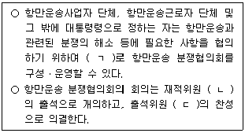
- ㄱ: 업종별, ㄴ: 과반수, ㄷ: 과반수
- ㄱ: 업종별, ㄴ: 과반수, ㄷ: 3분의2 이상
- ㄱ: 업종별, ㄴ: 3분의2 이상, ㄷ: 3분의2 이상
- ㄱ: 항만별, ㄴ: 과반수, ㄷ: 3분의2 이상
- ㄱ: 항만별, ㄴ: 3분의2 이상, ㄷ: 3분의2 이상
(정답률: 알수없음)
68. 항만운송사업법상 과태료 부과 대상은?
- 항만운송사업자로서 관리청의 자료 제출 요구에 거짓으로 자료를 제출한 자
- 선박연료공급업을 등록한 자로서 사업계획 변경신고를 하지 아니하고 장비를 추가한 자
- 해양수산부장관에게 신고하지 아니하고 선용품공급업을 한 자
- 항만운송사업자로서 대통령령으로 정하는 부득이한 사유로 등록을 하지 아니한 항만에서 미리 신고를 하지 아니하고 일시적 영업행위를 한 자
- 관리청으로부터 사업정지처분을 받았음에도 해당 기간 동안 사업을 영위한 항만운송사업자
(정답률: 알수없음)
69. 항만운송사업법령상 항만운송종사자 등에 대한 교육훈련기관에 관한 설명으로 옳지 않은 것은?
- 교육훈련기관은 매 사업연도의 세입ㆍ세출결산서를 다음 해 3월 31일까지 해양수산부장관에게 제출하여야 한다.
- 교육훈련기관은 법인으로 한다.
- 교육훈련기관은 다음 해의 사업계획 및 예산안을 매년 11월 30일까지 해양수산부장관에게 제출하여야 한다.
- 교육훈련기관의 운영에 필요한 경비는 대통령령으로 정하는 바에 따라 국가가 부담한다.
- 교육훈련기관을 설립하려는 자는 해양수산부장관의 설립인가를 받아야 한다.
(정답률: 알수없음)
70. 유통산업발전법령상 유통업상생발전협의회(이하 '협의회'라 함)에 관한 설명으로 옳지 않은 것은?
- 대규모점포 및 준대규모점포와 지역중소유통기업의 균형발전을 협의하기 위하여 특별자치시장ㆍ시장ㆍ군수ㆍ구청장 소속으로 협의회를 둔다.
- 협의회의 회의는 재적위원 과반수의 출석으로 개의하고, 출석위원 3분의 2 이상의 찬성으로 의결한다.
- 회장은 회의를 소집하려는 경우에는 긴급한 경우나 부득이한 사유가 있는 경우를 제외하고 회의 개최일 5일 전까지 회의의 날짜ㆍ시간ㆍ장소 및 심의 안건을 각 위원에게 통지하여야 한다.
- 협의회의 사무를 처리하기 위하여 간사 1명을 두되, 간사는 유통업무를 담당하는 공무원으로 한다.
- 협의회는 대형유통기업과 지역중소유통기업의 균형발전을 촉진하기 위하여 대규모점포 및 준대규모점포에 대한 영업시간의 제한 등에 관한 사항에 대해 특별자치시장ㆍ시장ㆍ군수ㆍ구청장에게 의견을 제시할 수 있다.
(정답률: 알수없음)
71. 유통산업발전법상 대규모점포등을 등록하는 경우 의제되는 허가등에 해당하지 않는 것은?
- ｢담배사업법｣에 따른 소매인의 지정
- ｢식품위생법｣에 따른 집단급식소 설치ㆍ운영의 신고
- ｢대기환경보전법｣에 따른 배출시설 설치의 허가 또는 신고
- ｢평생교육법｣에 따른 평생교육시설 설치의 신고
- ｢외국환거래법｣에 따른 외국환업무의 등록
(정답률: 알수없음)
72. 유통산업발전법령상 공동집배송센터의 지정취소사유에 해당하는 것을 모두 고른 것은?
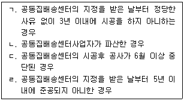
- ㄱ, ㄴ
- ㄷ, ㄹ
- ㄱ, ㄴ, ㄷ
- ㄴ, ㄷ, ㄹ
- ㄱ, ㄴ, ㄷ, ㄹ
(정답률: 알수없음)
73. 유통산업발전법령상 대규모점포등과 관련한 유통분쟁조정위원회(이하 '위원회'라 함)의 분쟁 조정에 관한 설명으로 옳지 않은 것은?
- 대규모점포등과 관련한 분쟁의 조정신청을 받은 특별자치시ㆍ시ㆍ군ㆍ구의 위원회는 부득이한 사정이 없으면 신청을 받은 날부터 60일 이내에 이를 심사하여 조정안을 작성하여야 한다.
- 시(특별자치시는 제외)ㆍ군ㆍ구의 위원회의 조정안에 불복하는 자는 조정안을 제시받은 날부터 15일 이내에 시ㆍ도의 위원회에 조정을 신청할 수 있다.
- 위원회는 동일한 시기에 동일한 사안에 대하여 다수의 분쟁조정이 신청된 경우에는 그 다수의 분쟁조정신청을 통합하여 조정할 수 있다.
- 위원회는 유통분쟁조정신청을 받은 경우 신청일부터 10일 이내에 신청인외의 관련 당사자에게 분쟁의 조정신청에 관한 사실과 그 내용을 통보하여야 한다.
- 위원회는 분쟁의 성질상 위원회에서 조정함이 적합하지 아니하다고 인정하거나 부정한 목적으로 신청되었다고 인정하는 경우에는 조정을 거부할 수 있다.
(정답률: 알수없음)
74. 유통산업발전법령상 지정유통연수기관의 지정기준으로 옳은 것을 모두 고른 것은?
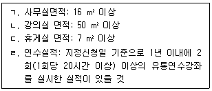
- ㄱ, ㄴ
- ㄱ, ㄹ
- ㄴ, ㄷ
- ㄴ, ㄷ, ㄹ
- ㄱ, ㄴ, ㄷ, ㄹ
(정답률: 알수없음)
75. 철도사업법상 철도사업자가 공동사용시설관리자와 협정을 체결하여 공동 활용할 수 있는 공동사용시설로서 옳지 않은 것은?
- 철도역 및 환승시설을 제외한 역 시설
- 철도차량의 정비ㆍ검사ㆍ점검ㆍ보관 등 유지관리를 위한 시설
- 사고의 복구 및 구조ㆍ피난을 위한 설비
- 열차의 조성 또는 분리 등을 위한 시설
- 철도 운영에 필요한 정보통신 설비
(정답률: 알수없음)
76. 철도사업법령상 민자철도의 운영평가 방법 등에 관한 설명으로 옳지 않은 것은?
- 국토교통부장관이 민자철도사업자에게 필요한 조치를 명한 경우 해당 민자철도사업자는 15일 이내에 조치계획을 마련하여 국토교통부장관에게 제출해야 한다.
- 국토교통부장관은 운영평가를 실시하려면 매년 3월 31일까지 소관 민자철도에 대한 평가일정, 평가방법 등을 포함한 운영평가계획을 수립한 후 평가를 실시하기 2주 전까지 민자철도사업자에게 통보해야 한다.
- 국토교통부장관은 운영평가 결과에 따라 민자철도에 관한 유지ㆍ관리 및 체계개선 등 필요한 조치를 민자철도사업자에게 명할 수 있다.
- 국토교통부장관은 운영평가를 위하여 필요한 경우에는 관계 공무원, 철도 관련전문가 등으로 민자철도 운영 평가단을 구성ㆍ운영할 수 있다.
- 국토교통부장관이 정하여 고시하는 민자철도 운영평가 기준에는 민자철도 운영의 효율성이 포함되어야 한다.
(정답률: 알수없음)
77. 철도사업법령상 전용철도를 운영하는 자가 등록사항을 변경하려는 경우 국토교통부장관에게 등록을 하지 않아도 되는 경미한 변경에 해당하지 않는 것은?
- 운행시간을 연장한 경우
- 운행횟수를 단축한 경우
- 10분의 1의 범위안에서 철도차량 대수를 변경한 경우
- 주사무소ㆍ철도차량기지를 제외한 운송관련 부대시설을 변경한 경우
- 9월의 범위안에서 전용철도 건설기간을 조정한 경우
(정답률: 알수없음)
78. 철도사업법상 국토교통부장관이 철도시설물의 점용허가를 취소할 수 있는 경우가 아닌 것은?
- 점용허가를 받은 자가 점용허가 목적과 다른 목적으로 철도시설을 점용한 경우
- 시설물의 종류와 경영하는 사업이 철도사업에 지장을 주게 된 경우
- 점용허가를 받은 자가 점용허가를 받은 날부터 6개월 이내에 해당 점용허가의 목적이 된 공사에 착수하지 아니한 경우
- 점용허가를 받은 자가 점용료를 납부하지 아니하는 경우
- 점용허가를 받은 자가 스스로 점용허가의 취소를 신청하는 경우
(정답률: 알수없음)
79. 농수산물 유통 및 가격안정에 관한 법령상 중도매업의 허가에 관한 설명으로 옳지 않은 것은?
- 도매시장법인의 주주 및 임직원으로서 해당 도매시장법인의 업무와 경합되는 중 도매업을 하려는 자는 중도매업의 허가를 받을 수 없다.
- 최저거래금액 및 거래대금의 지급보증을 위한 보증금 등 도매시장 개설자가 업무규정으로 정한 허가조건을 갖추지 못한 자는 중도매업의 허가를 받을 수 없다.
- 법인인 중도매인은 임원이 파산선고를 받고 복권되지 아니한 때에는 그 임원을 지체 없이 해임하여야 한다.
- 도매시장 개설자는 법인인 중도매인에게 중도매업의 허가를 하는 경우 3년 이상 10년 이하의 범위에서 허가 유효기간을 설정할 수 있다.
- 도매시장의 개설자는 갱신허가를 한 경우에는 유효기간이 만료되는 허가증을 회수한 후 새로운 허가증을 발급하여야 한다.
(정답률: 알수없음)
80. 농수산물 유통 및 가격안정에 관한 법령상 농수산물공판장(이하 '공판장'이라 함)에 관한 설명으로 옳지 않은 것은?
- 농림수협등, 생산자단체 또는 공익법인이 공판장의 개설승인을 받으려면 공판장 개설승인 신청서에 업무규정과 운영관리계획서 등 승인에 필요한 서류를 첨부하여 시ㆍ도지사에게 제출하여야 한다.
- 공판장 개설자가 업무규정을 변경한 경우에는 이를 시ㆍ도지사에게 보고하여야 한다.
- 생산자단체가 구성원의 농수산물을 공판장에 출하하는 경우 공판장의 개설자에게 산지유통인으로 등록하여야 한다.
- 공판장의 경매사는 공판장의 개설자가 임면한다.
- 공판장의 중도매인은 공판장의 개설자가 지정한다.
(정답률: 알수없음)